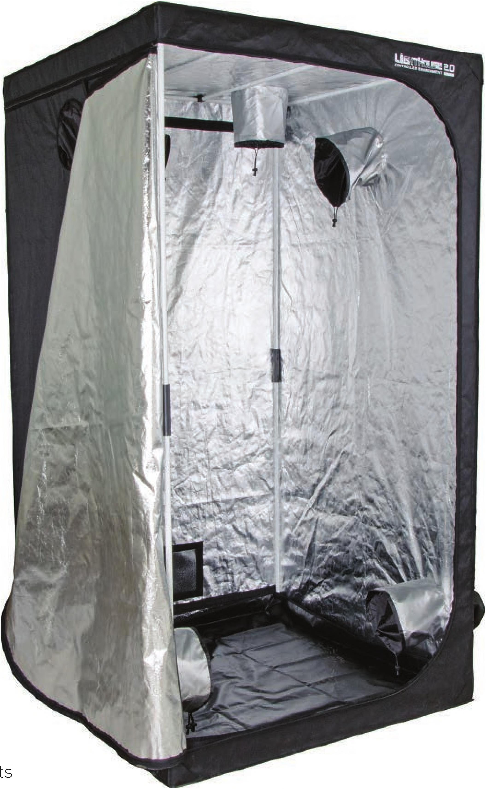

Grow tents come in a range of sizes, from 2' x 2' up to 10' x 20' (and bigger!). Ducting ports on grow tents make it easy to set up climate control and to hang lights. The tents’ solid bottoms contain any possible leaks. EQUIPMENT FOR GROWING INDOORS Although hydroponic gardens do not need to be indoors, they are generally associated with indoor growing. Indoor growing may sound easier because there are fewer unpredictable events like bad weather and bugs, but indoor gardeners find there is a whole new list of challenges. Some of the most common mistakes for beginner indoor growers are lack of adequate airflow, poor temperature control, poor humidity control, and insufficient light. The proper equipment is essential to have a successful indoor garden. Grow Tents Grow tents provide an enclosed space for environmental controls, lights, and growing systems. Sometimes it can be difficult to create the proper growing climate indoors, or the ideal growing climate may not be the same climate you wish to have in the rest of your indoor space. Plants may like humidity ratios around 50 to 80 percent, but people often prefer to be in a humidity outside of that range. Grow tents are a great way to isolate the plants in an indoor environment. Besides keeping a separate climate from the rest of the indoor space, a grow tent can keep in the bright light required for plant growth. It is sometimes advantageous to run grow lights for 20 hours or more per day, but I imagine people living in a small studio apartment might not be too happy having a bright light on for 20 hours a day when they're trying to sleep. Grow tents can also allow gardeners to contain their pest-management strategies, whether that is spraying or releasing beneficial predator insects to protect the crop. Grow tents are perfect for renters who do not have the ability to modify a room for growing. I have lost a couple of security deposits through the years due to my excitement to create a grow room without considering that all the modifications I was making to the room might not make the landlord very happy. A grow tent can pay for itself when you consider the possible loss of a security deposit. 28 DIY HYDROPONIC GARDENS
